Project Manager
The ultimate solution of projects, clients and team management
Project Manager is the best way to manage your projects, clients and team members. You can easily collaborate with your team and monitor your work.
Once you have downloaded the application,
install the application on your server and sign in to your dashboard.
-
Add your customers by going to the Clients view. You can access any view by clicking on the menus from the left sidebar.
-
Add your projects from the Projects view. Once you have created any project you are ready to add tasks, mile stones, files, comments, notes and invoices to the project. If you would like to track the time of your project, simply you can use the start timer button located in each project details view.
-
Do you have a team and you want to collaborate with them? You can invite or add manually your team members from the Team members view. Once you've added the team members then you can add the members in your projects, assign them to tasks, send messages, share ideas and files, store their personal, social and work information, etc.
-
Do you want to track attendance or daily time reporting of your team members? This application makes easy to time reporting. The team members can report the daily time cards by using the Clock In and Clock Out button located in dashboard. They can also submit the leave applications for their absences.
-
You can create invoices and send the invoices to your clients from the Invoices view. Make sure you have configured your email settings before sending any email.
-
Do you interested to provide a smart support to your customers? There is a client portal in this application. Your clients can login to the client portal and submit their support tickets. You can easily manage the tickets from the Support tickets view.
-
To make this application more suitable to you please take a look at the Settings page and change the settings according to your needs.
To learn more about the application please check all parts of this documentation. In this documentation, we'll describe different parts according to the screenshots.
-
Easily accessible UI
-
Project management
-
Client management
-
Team management;
-
Team conversation
-
Private messaging with team members and clients
-
Tasks, milestones, gantt, notes, files and customer feedback
-
Project timesheet and time tracker
-
Drag and drop facility for files
-
Custom Fields
-
Web and email notifications
-
Client portal
-
All reports of any client in a single page
-
Informative profile page for client contacts
-
Estimate requests
-
Estimates
-
Support tickets
-
Invoice management
-
Invoice pdf, online payment (PayPal and Stripe)
-
Expense & payments report
-
Custom role (permissions) for team members
-
Event calendar
-
Private notes
-
Customizable email templates
-
Timecard/attendance management
-
IP restriction for timecard entry
-
Leave management
-
Team member's details view
-
Announcement/notice management
-
Report printing and export
-
Dynamic graph and visual report
-
Activity logs for projects
-
Install updates in a click
-
Enable/Disable modules
-
Codeigniter 3.1.2
-
And more...
Server Requirements
-
Apache with PHP and MySQL server
-
PHP v5.3+
-
MySql
-
CURL Enabled
-
Openssl Enabled
Quick Installation Guide
-
Unzip the Project-Manager.zip which you have downloaded from the Envato Market.
-
Upload the files to your sever using any FTP client.
-
The file structure should be look like this:
-
/application
-
/assets
-
/documentation
-
/files
-
/install
-
/system
-
/updates
-
/index.php
-
Create a MySql Database via your web hosting providers Control Panel (e.g. cPanel). Once you have created the database, remember the following information:
-
Database Name
-
Database Username
-
Database Password
-
Open your web browser and enter the url (http://yourdomain.com or http://yourdomain.com/foldername) in the address bar.
-
If everything is ok, you should get the installation page.
-
Follow the instructions and click on the Next button. Then enter the database details which you have collected earlier. Finally, enter your name, email and password which will be required to login in the application. Then click on the Finish button and wait a while. The system will create necessary tables in database, files and configuration.
-
That's all! After completing the installation delete the installation folder and login to your dashboard.
You can create and manage your customers in clients section.
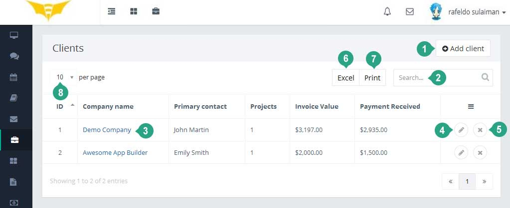
List of Clients
-
Create new client using the Add client button.
-
Search the existing clients which already added in this application.
-
To see the details information of the client click on the Company name link.
-
If you need to edit the client's information you can do it using the edit button.
-
To delete the client use the delete button. Once you click on the button, the system will delete the client and you will have a chance to undo the action within 10 seconds. If you don't undo the action, the system will delete the client permanently and you will not be able to revert the client anyway!
Add new client
-
The company name is an organization you or your organization works for. Even if your client is a person you have to add the information as a company. After creating any client you can add contacts of that client.
-
You can define different currency for different clients. It's useful when you are working with a foreign client which currency symbol is different from your default currency symbol. By default the invoices of the client will be generated using the default currency symbol if you don't define any currency symbol with that specific client.
Client Details
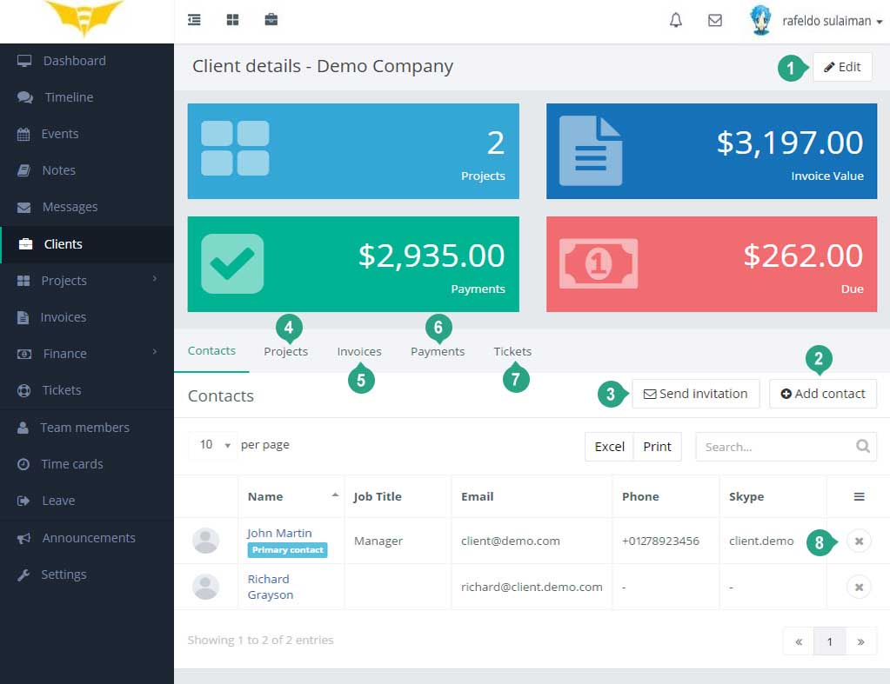
-
Click on the Edit button to edit any information of the client.
-
The contacts tab contains the list of contacts of the client. You can add one or more contact by clicking on the Add contact button.
-
To send an invitation to any user for the client, use the Send invitation button.
-
Projects tab contains all projects of the client.
-
Invoices tab contains all invoices of the client.
-
Payments tab contains all payments of the client.
-
Tickets tab contains all tickets of the client.
-
To delete any contact from the client, use the delete button. Once you delete any contact you can undo the action within 10 seconds. If you don't undo the action the contact will be deleted from the client permanently and the contact will not be able to login in the client portal.
You can create and manage your projects here.
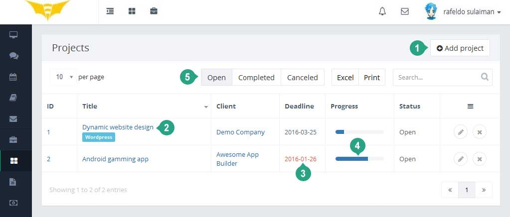
List of Projects
-
Create new project using the Add project button.
-
To see the details information of the project click on the project title link.
-
By default the deadline color is black. If the deadline expires by today then the deadline color will be changed to orange and all expired deadline will be red color for non-completed projects.
-
The progress bar indicates the total progression of the project. To generate this progress bar, we calculate the total completed and non-completed tasks. The tasks points are important to calculate the progression.
-
To filter the projects quickly, you can click on the radio buttons.
Project Details
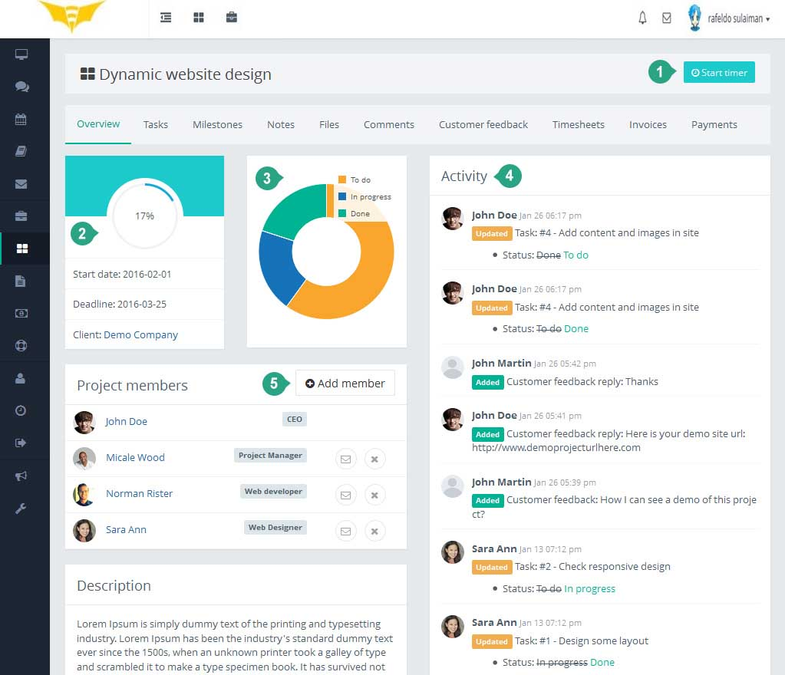
-
To track the project time you can use the Start time button. Once you click on the Start time button the timer will be turned on. When you want to stop tracking the time you have to click on the Stop timer button.
-
The project progression chart represents the total progression of the project.
-
You can see the total tasks status of the project from the chart.
-
Activity timeline represents the project history.
-
To add new member in this project, click on the Add member button and select the user.
You can create and manage your invoices from the Invoices menu.
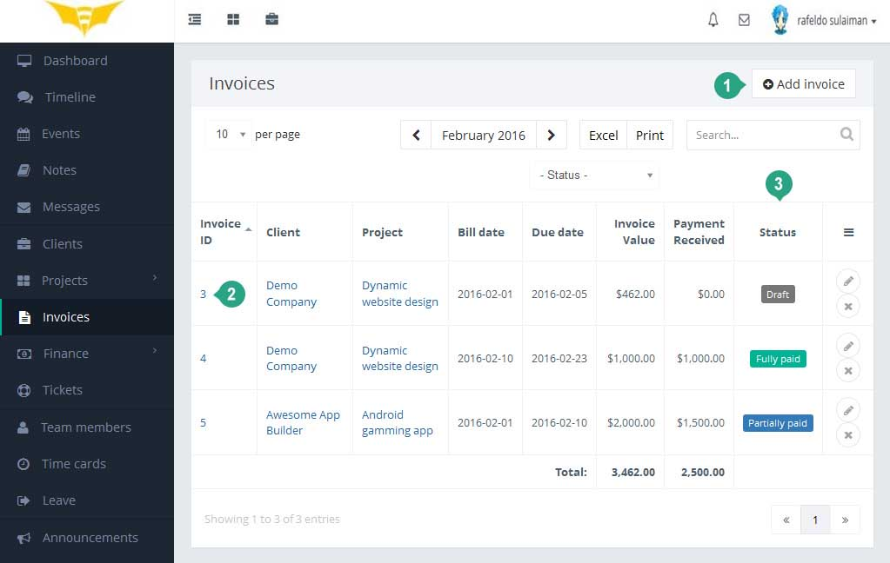
List of Invoices
-
Create new invoice using the Add invoice button.
-
To see the details information of the invoice click on the invoice id link.
-
The invoice status represents the different states of the invoice. By default any invoice will be create with Draft status. Once you sent the invoice to the client then the invoice status will be changed to Sent. Once you receive any payment the invoice status will be changed to Fully paid or Partially Paid.
Invoice Details
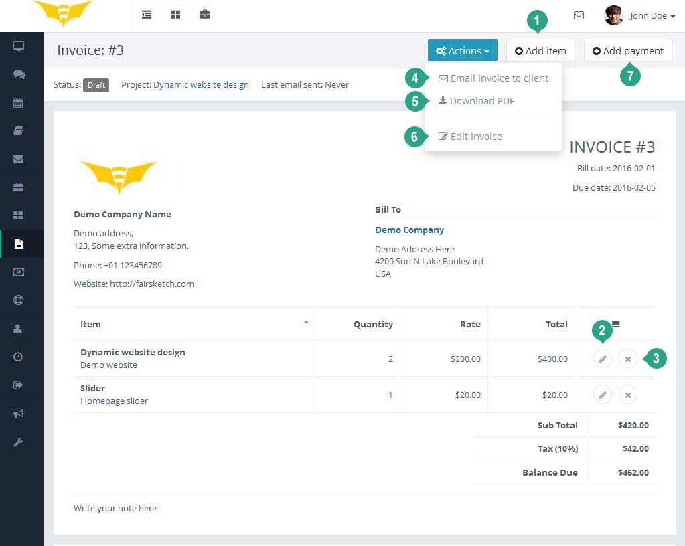
-
To add any item/product in the invoice, click on Add item button.
-
If you want to edit the inserted item, you can click on the edit button of invoice item row.
-
By clicking on delete button in invoice item row, you can delete the item from the invoice.
-
To send a pdf copy of the invoice to the client, click on the Email invoice to client menu.
-
You can download a pdf version of the invoice using the Download PDF menu.
-
To edit any information in the invoice click on the Edit invoice menu under the Actions dropdown.
-
By clicking on the Add payment button you will get a modal to add payment in the invoice.
In this application the expenses are located in under the Finance menu. Click on the Expenses menu to access the expenses page. Only admin and allowed team members can access the Expenses page. Admin can define the role of a member to access the expenses.
The expenses view represents a list of expenses. Admin can add new expense categories from the Settings section.
In this application you can create any support ticket on behalf of your client or client can create any support ticket for himself.
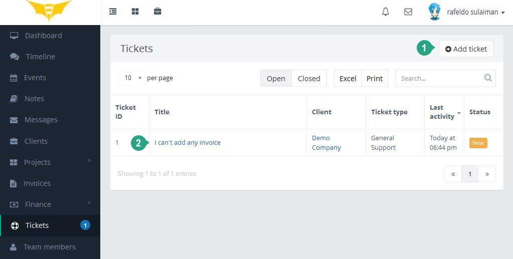
List of Tickets
-
Create new ticket using the Add ticket button.
-
To see the details information of the ticket click on the ticket title link.
Using this application you can manage your team members easily.
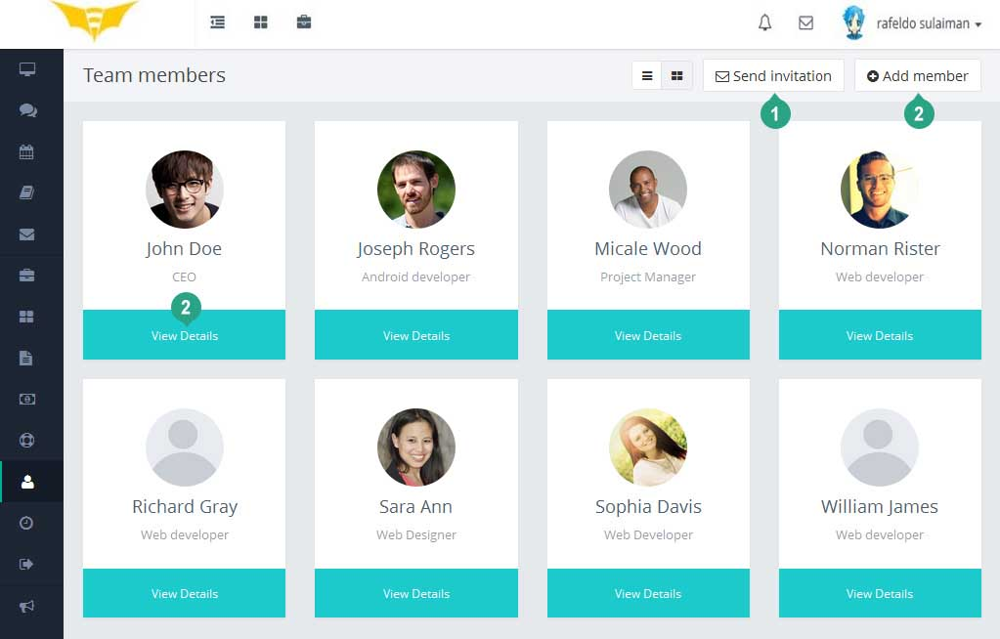
There are two views for team members.
-
Whenever you want to add a new team member in this application, you can send invitation to the users email. The user will get an email with the signup instructions.
-
Instead of sending invitation to the team members, you can add any team member manually, using the Add member button.
-
To view the details of any team member, click on the view details link.
Team member's Details
In team member’s details view, you can see the details information about any member at a glance.
-
The Timeline tab represents all the posts of the member.
-
You can view or update the basic information of the member from the General Info tab.
-
Manage social links from the Social Links tab.
-
You can manage the login or access role from the the Accounts settings tab.
-
The Job info tab represents the job title, salary and the other job related information.
-
To see the details list of the member's attendance, check the Time cards tab.
-
From the Leave tab, you can see the details leave history for the team member.
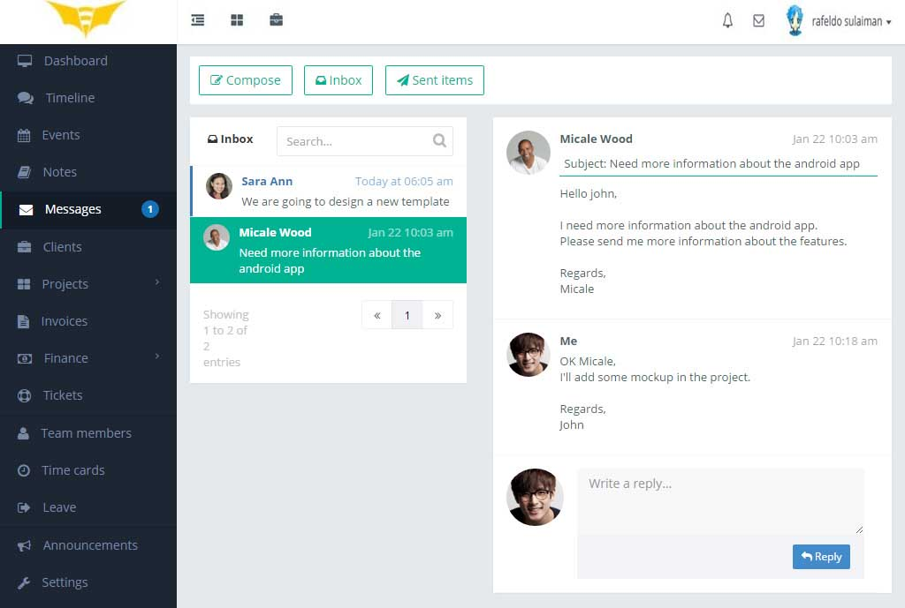
All team members can send message to any team member. There are no restrictions to send messages for member to member.
Admin can control the messaging rule between team members and clients. From the Client settings, admin can set who can communicate with the clients. Only the selected members will be allowed to send/receive message to/from the clients.
Whenever you receive any new message, a notification icon will be appeared in the top right section in the application.
Events
The events page represents a calendar with all events. You can add new event in the calendar. Click on the calendar date to add any event on that specific date. You can define different colors for different events to make the view easier to see.
By clicking on any event, you can see the details information about that event.
Notes
There are two kinds of note in this application. In dashboard, you can save any quick note in Sticky Note. In this application all notes are private (Only you can see your notes).
There are other notes in the Notes page. You can add any private note here. If you add any note in any projects that notes also will be appeared in the notes list.
Timeline is a collaboration/conversation area of the team members. All team members can see this view. It's a best place to share any idea or files among the team members.
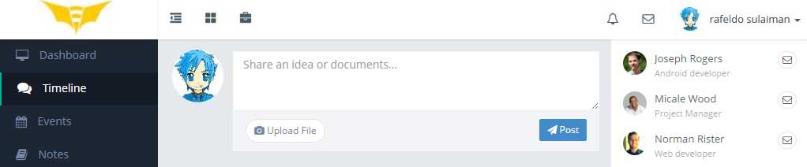
To share any file you can click on Upload File button or drag and drop files on the box. By default all file types are not supported to upload in the application. Admin can set the settings of accepted file formats in General Settings section.
The time cards section represents the attendance or total time log of each team members. Any team member can start clock from the dashboard by clicking on Clock In button. Once he/she clicks on the Clock In button the timer count starts. After clicking on the Clock Out button the timer stop counting the time for the team members.
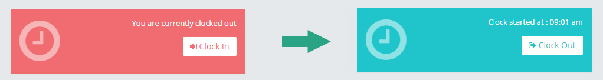
Admin or allowed members can add time manually for any team member.
If admin wants to set any IP restriction for this module then he/she can set the allowed IP addresses in the IP Restriction Settings Section Under the Settings menu. Admin users are not applicable for this restriction. The admins are allowed to access the time card Clock In/Out from any IP address. The system will check the IP address of the non-admin team members.
This application allows the leave management facility for the team members. The team member can apply for leave and the admins or superiors can approve/reject the leave application.
Admins and superiors can assign leave for subordinates. Admin can create various leave types from the Leave types Setting.
This application provides the announcement publishing feature. The admins and selected team members can create new announcement for team members and/or clients.
The published announcement will be appeared in dashboard of each user. Once the user clicks on the announcement then it will not be appear in dashboard again. But the users can see the announcement from the Announcements menu anytime.
The application has various types of settings to make suitable according to your work. Here are some basic introductions about the settings.
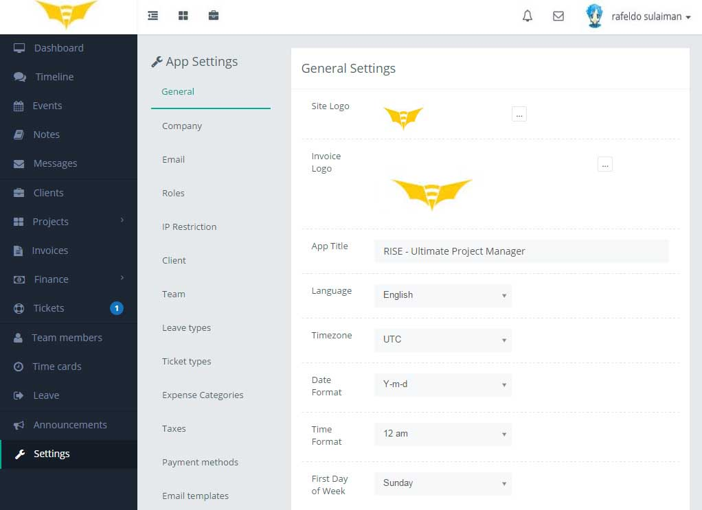
-
General Settings: In this section, you can change the application logo, title, localization settings, file type restriction and the item purchase code.
-
Company Settings: Here you can set the company information which will be appeared in invoices.
-
Email Settings: The email setting required for out-going emails. All emails will be sent using the settings. You can use either the default mail sending method of your server or SMTP.
-
Roles Settings: It's a setting to set different access permission for different users. To add any role click on the Add role button. Once you create any role then you can set permission to the role by clicking on the role. You'll see different types of access permission and you can choose in your own way. After defining the roles you can set the role to any team member. Each team member can have one role at a time. By default all team members has the Team Member role. To change the role of any team member, go to the team member’s details view and click on the Account settings tab and choose your desired role for the member.
-
IP Restriction Settings: If you would like to prevent accessing the Clock In/Clock Out of Time card from unauthorized IP, you can add authorized IP address here.
-
Client Settings: In this area you can control the client login/signup and the message sending rule between client and team members.
-
Team Settings: You can define different team or group of your team members. Useful when you want to create any role where the one or more members have the same power. In future we'll add more feature using the team.
-
Leave types: You can create various leave types from here.
-
Ticket types: You can create various ticket types from here.
-
Expense Categories: There could be various expense types in your business; you can add the types here.
-
Taxes Settings: In this application the taxes are using in Invoices. You can define different taxes name and percentage here.
-
Payment Methods: To receive any payment through invoice the payment methods are required. Add your required payment methods in this section.
-
Email templates: The application has some default email templates which are using to send different emails. You can change the appearance of the email templates as you like.
Please note that you can only download the updates if you have a valid purchase code. Enter the valid purchase code in general settings of this application and save the settings.
Please backup all files and database before start the installation of updates.
There is a very easy way to update your application.
To install any updates go to Settings>Updates of the application. The download will be start automatically once any new update is available. Once the download is completed you can install the updates by clicking on the link. That’s all!
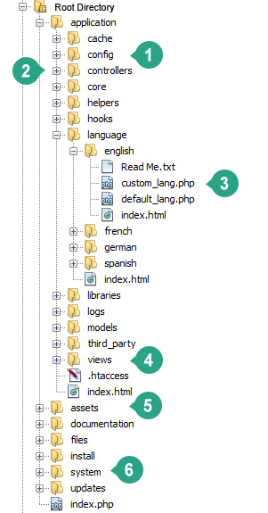
-
The config folder contains all configuration related files.
-
The controllers folder contains all business logic of the application.
-
If you would like to add any new language then create a new folder and add the custom_lang.php and default_lang.php. Please keep it in mind that you shouldn't change anything in the default_lang.php. If you would like to add/update any language, then update the custom_lang.php. When you install any new updates then the defult_lang.php could be change. So update your custom_lang.php manually (if required) after installing new updates. To change the language of the application, go to the Settings>General settings section and choose your language then save the settings.
-
Views folder contains all the view related files.
-
Assets folder contains all css, js and images of the application.
-
Don't change anything in system folder. It's contains the core functions of the application.
To learn more about the application you can learn the codeigniter framework.
How to add new language?
- Please go to \application\language directory
-
Copy the english language folder and paste (set the directory name for your language)
-
Add your translations in default_lang.php
-
Finally set this language in application from Settings>General Settings>Language.
How to improve existing language?
- Please go to \application\language\[your language] directory
-
Copy the default_lang.php and paste all to custom_lang.php
-
Change the custom_lang.php.
How to share my language?
- Please update your language in rafeldo29@gmail.com
How to add new pages?
- If you want to add any restricted page (login required?), please extend the controller from MY_Controller
- If you want to add any public page (login not required), extend the controller from CI_Controller
How to save?
- All models are extended from Crud_model (\application\models\Crud_model.php)
- Please check the add/edit/remove and basice i/o functions there.
How to create the table list view?
- The table list is using datatable plugin but we've developed a library to manage it easily. Please take a look at \assets\js\app.js
- In application, we are using the assets\js\app.min.js
Thanks again to purchase this application. We are trying to add and improve new features regularly. Hopefully you'll enjoy using the app. If you have any query or suggestion, please send an email to rafeldo29@gmail.com
Rafeldo Team